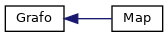

TP_PDSII - Google Maps
0
Sistema de navegação a partir de mapa (osm) inspirado pelo Google Maps
Hierarquia de Classes
Vá para a hierarquia de classes (texto)

Gerado em Quinta, 11 de Junho de 2026 12:13:38 para TP_PDSII - Google Maps por
1.9.1
 1.9.1
1.9.1